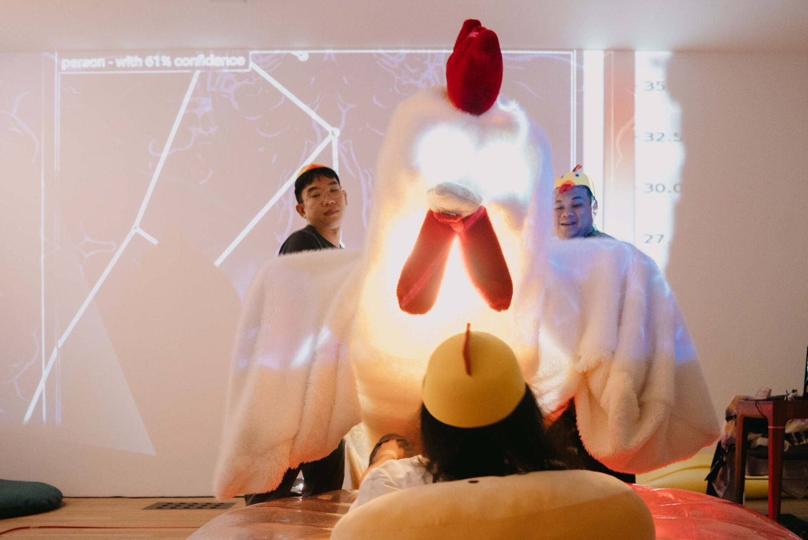
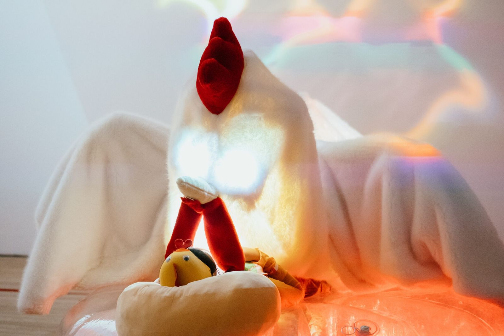

An installation by Henry Tan, developed with Potiwat Ngamkajornwiwat, around Salvatore, a robotic creature that watches over people as they sleep. As it watches, Salvatore tells tales of "cybernetic hibernation", a messenger carrying warnings about the future. Shown at ZER01NE DAY, Seoul, and Tai Kwun, Hong Kong.
Artist: Henry Tan · Robotics: Potiwat Ngamkajornwiwat · Creative technology (interactive experience, sensors, image processing, robotic control): Weeratouch Pongruengkiat

Photos: henryandpartners.com